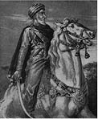

Alamut Kalesi’nde Hasan Sabbah’ın hükümdarlığının halen sürmekte olduğu ve ajanlarının sözle ve silahla onun mesajını İran halkına ve şahlarına taşıdığı sırada, müritlerinden birkaçı da düşman toprakları üzerinden batıya doğru uzun ve tehlikeli bir seyahate çıkmışlardı. İstikametleri Suriye’ydi; amaçları yeni daveti bu ülkedeki eski İsmaililere taşımak ve son zamanlarda Ön Asya’dan Mısır sınırlarına dek uzanan toprakları ele geçirmiş olan Selçukluların egemenliğine karşı mücadelelerinin alanını genişletmekti.
İran’da yükselişe geçmiş olan yeni davetin temsilcileri ilk büyük başarılarını İran dilinin ve kültürünün hüküm sürdüğü topraklarda; Doğu ve Batı İran ve Orta Asya’da elde etmişlerdi.
İlk batıya açılma girişimleri için Suriye kesinlikle biçilmiş kaftanken, İran’ın biraz batısındaki Irak pek elverişli şartlar sunmuyordu. Şüphe yok ki Irak şehirlerinde de İsmaili sempatizanları yaşıyordu ancak düz nehir vadileri İsmaililerin yayılma, mevzi tutma ve hücum etme stratejilerine pek imkan tanımıyordu. Oysa Suriye böyle değildi. Toros Dağlarıyla Sina Yarımadası arasında kalan dağlar, vadiler ve çöllerle parçalanmış bu coğrafya, güçlü bir bağımsızlık geleneğine sahip, kendi içinde büyük çeşitlilik gösteren bir nüfusa barınak teşkil ediyordu. Komşuları Irak ve Mısır’da nehir vadilerinde yerleşmiş toplulukların aksine, Suriye’de siyasi birliğe nadiren rastlanıyordu. Burada daha çok parçalı bir yapıya; tarikatlara ve bölgelere dayalı yerel yönetimler ve durmadan tekrar eden çatışmalar ve değişimler hüküm sürmekteydi. Ortak dilleri Arapça olmasına rağmen Suriye halkı, aralarında kimi radikal Şii inanışlarının da bulunduğu çok sayıda inanca ve tarikata ayrılmıştı. İlk Şii talipli, 8. yüzyılda Suriye’de ortaya çıkmış, 9. yüzyılın sonu ve 10. yüzyılın başına gelindiğindeyse İsmaililerin gizli imamları Suriye’yi gizli karargahlarına ve ilk iktidar arayışlarına mekan yapabilmek için gerekli halk desteğine sahip olmuşlardı. Mısır’da Fatımi halifeliğinin kurulması ve Asya’ya doğru genişlemesi, Suriye’yi 10. yüzyılın sonları ve 11. yüzyıl boyunca aralıklarla İsmaili egemenliği altına sokmuş ve ülkeyi İsmaililerin propagandalarına ve yönlendirmelerine açık hale getirmişti.
Esas İsmaililerin yanı sıra, öğretileri, hal ve tavırları bakımından İsmaililerle oldukça benzeşen başka tarikatların da varlığı, Alamut’tan gelen ajanlara, yeni müritler kazanabilmeleri için gelecek vaat eden bir kaynak sunmaktaydı. Bu kaynaklara örnek olarak Lübnan ve bitişiğindeki bölgelerde yaşayan, İsmaililerin ana gövdesinden henüz kopmuş olup ileriki dönemlerde kemikleşecek olan ayrıcalıklı konumlarına henüz kavuşmamış Dürzileri gösterebiliriz. Bir diğer potansiyel taraftar topluluğuysa aslen On İki İmam Şiiliğine mensup ancak daha çok radikal fikirlerin etkisi altındaki Arap Aleviler olan Nusayrilerdi. Bu iki tarikat, Lazkiye’nin doğusu ve kuzeydoğusundaki tepelik bölgeleri ve muhtemelen o tarihlerde Taberiye’yi ve Ürdün Vadisi’ni yurt edinmişlerdi.
Mekan gibi zaman da son derece müsaitti. Kayıtlara göre ilk Türkmen gruplarının Suriye’ye giriş tarihi 1064’tü. 11. yüzyılın yetmişli yıllarında önce Türk akıncılar, daha sonra da düzenli Selçuklu birlikleri ülkeyi istila etmişler ve kısa zamanda Fatımilerin ellerinde tuttukları bir sahil şeridi hariç Suriye’nin tamamı Selçuklu egemenliği altına girmişti. Başta, Büyük Selçuklu Sultanı Melikşah’ın erkek kardeşi Tutuş bulunuyordu.
Tutuş, sultan tahtına oturmak için tutuşulan bir saltanat kavgası sırasında 1095 senesinde İran’da öldürüldü. Suriye’deki parçalı bölgesel yapıyla Selçukluların saltanat kavgaları geleneği bir araya gelince devlet paramparça olmuştu. Suriye yeniden, bu kez Selçuklu şah ve komutanlarının yönettiği küçük devletçiklere bölünmüştü. Bu şah ve komutanlardan en önemlileri birbirine düşman iki şehir olan Halep ve Şam’ı ellerinde tutan, Tutuş’un oğulları Rıdvan ve Dukak’tı.
Tam da kavga ve çatışmanın doruğa tırmanmış olduğu bu esnada yeni bir güç olarak Haçlılar ülkeye girmiştir. Kuzeyden Antakya üzerinden gelen Haçlı kuvvetleri, karşılarına onlara karşı koyabilecek bir güç çıkmayınca Suriye’nin kıyı şeridi boyunca hızla aşağıya inmişler ve Urfa, Antakya, Trablus ve Kudüs’te dört Latin devleti kurmuşlardır.
Selçuklu egemenliğinin Suriye’ye kadar genişlemesi, doğuda halihazırda aşinası olunan pek çok sosyal değişim ve gerilimi beraberinde getirmiştir. Latin istilasının ve fetihlerin şokunun da tüm bunların üzerine eklenmesi, Suriyelilerin ıstırap ve yılgınlığını daha da arttırmış ve bilhassa da halihazırdaki inanışları kendilerini böylesi bir mesaja hazırlıklı kılmış olanları Mesihi umut tacirleri için kolay lokma haline gelmişti. Suriye’de Kahireli Fatımilerin İsmaililiğin eski davetini benimseyen müritleri hâlâ bulunuyordu ancak Kahire rejiminin hainliğe varan zaafları ve ne Türk tehdidine ne de Latin tehdidine karşı durabilmiş olmaları pek çok kimsenin bağlılıklarını, daha etkin, daha militan ve görünüşte daha başarılı olan kola sunmalarına yol açmıştır. Görünüşe bakılırsa fiiilerden bazıları ve Sünnilerin büyük bölümü mevcut inanışlarını korumuşlarsa da pek çokları, bir başlarına istilacılara ve ülkenin egemenlerine kafa tutmaya aday gözüken yeni gücün safına geçmişlerdi.
Başlangıçtan itibaren, Almut’un Suriye’deki ajanları İran’daki yoldaşlarıyla aynı yöntemleri kullanıp aynı sonuçlara ulaşmaya gayret etmişlerdi. Hedefleri, terör faaliyetlerinin üsleri haline getirmek üzere kaleleri ele geçirmek ya da zapt etmekti. Bu hedeflerine ulaşabilmek için, bilhassa da dağlık bölgelerdeki müritlerde bir coşku uyandırmaya ve bu coşkuya bir yön vermeye koyulmuşlar, bir yandan da sınırlı ve geçici bir ittifakın her iki tarafa da uygun geldiği hallerde emirlerin ihtiyatlı işbirliği tekliflerini geri çevirmemişlerdir.
Bu türden yardımlara ve tek tük başarılara rağmen, muhtemelen de İranlı olmaları sebebiyle yabancısı oldukları bir coğrafyada faaliyetlerini yürütmekte olduklarından, Suriye görevi İsmailileri oldukça zorlamıştır. İlk hedeflerine ulaşıp Suriye’nin ortasındaki bir dağlık bölgede, bugünkü adı Cebel-ü Ensariye olan Cebel-ü Bahra’da birkaç kale ele geçirebilmeleri yaklaşık yarım asırlık bir çaba gerektirmişti. Bilindiği kadarıyla bütün liderleri İranlıydı ve Alamut’tan gönderilip bizzat Hasan Sabbah’ın ve haleflerinin emirleri doğrultusunda hareket etmişlerdi. Yerleşmeleri üç aşamalı olarak gerçekleşmişti. 1130 tarihlerinde sonlanmış olan ilk iki aşama boyunca sırasıyla Halep ve Şam’da bu şehirlerin idarecilerinin göz yumduğu ölçüde faaliyetlerini sürdürmüşler ve civar bölgelerde de yer edinmeye çalışmışlardı. Her iki aşama da başarısızlık ve felaketle sonuçlanmıştır. 1131’de başlayan üçüncü aşamadaysa nihayet ihtiyaçları olan üsleri ele geçirip buraları sağlamlaştırmışlardı.
Suriyeli tarihçiler tarafından kaydedildiği üzere, Suriyeli İsmaililerin tarihi, özetle, işlemiş oldukları suikastların tarihidir. Hikaye, 1 Mayıs 1103 tarihinde Humus hükümdarı Cenahü’dDevle’nin şehrin merkez camiindeki Cuma namazı sırasında sansasyonel bir cinayete kurban gitmesiyle başlamıştı. Katiller, sufi kılığına girmiş İranlılardı ve kendilerine refakat eden bir şeyhin işaretiyle kurbanlarının üzerine çullanmışlardı. Çıkan arbedede Cenahü’d-Devle’nin birçok subayı ve katillerden de bir o kadar kişi öldürülmüştü. Dikkat çekici bir biçimde Humus’taki Türklerin çoğu Şam’a kaçmıştı.
Cenahü’d-Devle, Halep’in Selçuklu hükümdarı Rıdvan’ın düşmanıydı ve pek çok vakanüvisin mutabık olduğu üzere bu cinayette Rıdvan’ın parmağı vardı. Bazı va-kanüvislerse daha detaylı bilgi vermişlerdir. Haşhaşiye’nin ya da Haşhaşilerin Suriye’deki lideri, hekimastrolog el Hakim el Müneccim isminde biriydi. İran’dan gelip Halep’e yerleşmiş olan el Hakim el Muneccim ve arkadaşları, Rıdvan’ın müsaadesiyle burada dini faaliyetlerini ve propagandalarını yürütmüşler ve şehri daha sonraki hamleleri için bir üs olarak kullanmışlardır. Halep, Haşhaşiler için son derece elverişli bir mekandı. Nüfusunun önemli bir bölümü On İki İmam Şiiliği taraftarıydı ve Cebelü’s-Summak ve Cebel-ü Bahra’daki aşırılıkçı Şii bölgelerinin de yakınındaydı. Rıdvan gibi dini vecibelerine pek bağlı olmayan birine Haşhaşiler, yeni destek unsurlarını harekete geçirme ve Suriye’deki düşmanları karşısında askeri açıdan eksiklerini kapatabilme imkanını sunuyorlardı.
El Hakim el Müneccim, Cenahü’d-Devle’den yalnızca iki-üç hafta kadar fazla yaşayabildi ve yerine Haşhaşilerin lideri olarak bir başka İranlı, kuyumcu Ebu Tahir es-Saiğ geçti. Ebu Tahir es-Saiğ, Rıdvan’ın hoşgörüsünü ve Halep’in özgürlüğünü muhafaza ettiği gibi şehrin güneyinde kalan dağlardaki stratejik noktaları ele geçirebilmek üzere bir dizi girişimde bulundu. Görünüşe bakılırsa halkın desteğini bir süreliğine de olsa arkasına alabilmiş ve kimi mevkileri elinde tutabilmeyi başarmıştı.
Kayıtlara geçmiş ilk saldırı, 1106 senesinde Efamiye’ye karşı düzenlenmiştir. Hükümdar Halef İbn Mülâib, İsmaili olması muhtemel ama Alamut’a değil Kahire’ye bağlı bir Şii’ydi. Efamiye’yi Rıdvan’dan 1096’da almış ve burayı etkili ve geniş çaplı eşkıyalık eylemleri için bir üs haline getirmek suretiyle mekandan sonuna kadar faydalanmayı bilmiştir. Haşhaşiler, Efamiye’nin ihtiyaçlarını karşılamaya son derece uygun olduğuna karar vermişlerdi ve Ebu Tahir de Halef’i öldürüp kalesini ele geçirmek üzere bir plan kurmuştu. Efamiye’nin sakinlerinin bir kısmı da yerli İsmaililerdi ve liderleri, yakınlarındaki Sermin’in yargıçlarından biri olan Ebü’l-Feth aracılığıyla entrikaya ortak oldular. Altı kişilik bir Haşhaşi grubu saldırıyı gerçekleştirmek üzere Halep’ten geldi.
“El koymuş oldukları bir Frank’a ait bir at, bir katır, bir kalkan ve zırhla Halep’ten Efamiye’ye giderek Halefe ‘Buraya emriniz altına girmeye geldik. Bir Frank şövalyesi bulup öldürdük ve atını, katırını ve teçhizatını size getirdik’ dediler. Halef onları büyük bir şerefle kabul edip Efamiye Kalesi’nde, duvara bitişik inşa edilmiş bir eve yerleştirdi. Duvarda bir delik açan saldırganlar delikten geçen Efamiyelilerle buluştular ve Halefi öldürüp Efamiye Kalesi’ni zapt ettiler.”(103)
Bu hadise 3 Şubat 1106’da gerçekleşmişti. Çok geçmeden Ebu Tahir es-Saiğ Halep’ten bizzat gelip iktidarın başına geçti. Efamiye saldırısı umut verici başlangıcına rağmen başarıya ulaşamamıştır. O sırada civarda olan Antakya’nın Haçlı Prensi Tancred, Efamiye’ye saldırma fırsatını kaçırmadı. Gelişmelerden haberdar edildiği belli olan prens, yanında esiri olan Serminli Ebü’l Feth’in erkek kardeşini de götürdü. Başta Haşhaşileri haraca bağlamakla yetinip şehri onlara bırakmayı düşünürken aynı senenin Eylül ayında geri dönmüş ve şehri abluka altına almıştı. Serminli Ebü’l Feth esir alınıp işkence edilerek öldürülmüş; Ebu Tahir es-Saiğ ve dostlarıysa esir alınmış ve fidye ödemeleri karşılığında serbest bırakılıp Halep’e geri dönmüşlerdi.
Haşhaşilerin Haçlılarla bu ilk karşılaşmaları ve titizlikle hazırlamış oldukları bir planın bir Haçlı prensi tarafından bozulmasının yarattığı kızgınlık bile dikkatlerinin Müslüman hedeflerden Hristiyanlara kaymasına yol açmamış gözükmektedir. Esas mücadeleleri halen İslam’ın düşmanlarına değil efendilerine karşı sürmekteydi. Öncelikli hedefleri kimin elinden olursa olsun bir üs ele geçirmek, uzun vadedeki amaçlarıysa Selçuklu güçlerini belirdikleri her yerde alt etmekti.
1113’de en çok arzuladıkları darbeyi; görünüşte Haçlılara karşı mücadelelerinde Suriyeli Müslümanlara destek olmak üzere Suriye’ye gelmiş olan doğu akıncı gücünün kumandanı, Selçukluların Musul Emiri Mevdud’un Şam’daki katlini gerçekleştirdiler. Mevdud’un seferi Haşhaşiler için açık bir tehdit teşkil ediyordu ve bu korkuya sahip olanlar yalnızca onlar değildi. 1111’de Mevdud’un orduları Halep önlerine geldiğinde, Rıdvan şehrin kapılarını onların yüzlerine kapatmış ve Haşhaşiler de Rıdvan’ın yardımına koşmuşlardı. O dönemin hem Müslüman hem de Hristiyan kaynaklarında kayda geçmiş olan bir söylentiye göre, Mevdud’un katli Şam’ın Müslüman naibi tarafından teşvik edilmişti.
Doğu Selçuklularının etkilerinin Haşhaşiler için yarattığı tehlike, hamileri Rıdvan’ın 10 Aralık 1113 tarihindeki ölümünden sonra iyice açığa çıkmıştır. Haşhaşilerin Halep’teki faaliyetleri giderek onları kasaba halkının gözünden düşürmüş ve 1111 senesinde İsmaili karşıtlığını beyan etmekten çekinmeyen, doğudan gelmiş İranlı bir zengine karşı başarısız suikast girişimleri halk arasında kendilerine yönelik bir feverana yol açmıştı. Rıdvan’ın vefatından sonra oğlu Alparslan önceleri babasının siyasetini sürdürmüş ve hatta Bağdat yolu üzerindeki bir kaleyi Haşhaşilere tahsis etmişti.103
Ancak tepkiler gelmekte gecikmedi. Büyük Selçuklu Sultanı Muhammed, Alparslan’a gönderdiği bir mektupta kendisini İsmaili tehdidine karşı uyarıyor ve İsmailileri yok etmeye zorluyordu. Şehirde, kasaba halkının lideri ve milislerin kumandanı İbn Bedi inisiyatifi ele almış ve hükümdarlarını sert tedbirlere başvurmaya ikna etmişti. “Kuyumcu Ebu Tahir’i tutuklatıp öldürdü ve Dai İsmail’i, hekim-astrologun erkek kardeşini ve tarikatın Halep’teki liderlerini sırasıyla bir bir öldürdü. İki yüz kadarı tutuklandı, bir kısmı hapsedildi ve mülklerine el kondu. Bir kısmı için araya aracılar girdi, bir kısmı salıverildi, bir kısmı kale surlarından aşağıya atıldı, bir kısmı ise idam edildi. Bazılarıysa kaçtı ve izlerini kaybettirmeyi başardı.”104
Bu aksiliğe ve bir kaleyi elde uzun süre tutmayı halen başaramamış olmasına karşın İranlı İsmaili heyeti, Ebu Tahir es-Saiğ’in önderliğinde hiç de kötü işlere imza atmamıştı. Yerel sempatizanlarla ilişkiye geçilmiş, diğer İsmaili kollarından olanlar ve Suriye’nin çeşitli tarikatlarındaki aşırılıkçı Şiiler saflara katılmışlardı. Cebelü’s Sumak’da, Cezr’de ve Benu Uleym’de, yani Şeyzer ve Sermin arasındaki stratejik açıdan önemli noktalarda önemli bir halk desteği elde edilmiş, Suriye’nin diğer köşelerinde özellikle de doğuya, Alamut’a doğru haberleşme hattı üzerindeki belli yerlerde destek noktaları oluşturulmuştu. Fırat Nehri’nin Halep’in doğusunda kalan yöreleri, gerek ilk gerekse sonraki dönemlerde aşırılıkçı Şiiliğin merkezleri olarak tanınmaktaydılar ve elimizde bu tarihlere ilişkin doğrudan deliller olmasa da Ebu Tahir es-Saiğ’in eline geçen fırsatları değerlendirmiş olduğu kesindir.
1114 senesinin ilkbaharı gibi erken bir tarihte, Efamiye’den, Sermin’den ve diğer mekanlardan toplanmış yüz civarında adamdan oluşan bir İsmaili birliği, efendileri ve maiyetiyle birlikte Hristiyanların Paskalya Yortusu kutlamalarını izlemeye gittiği bir anda düzenlemiş oldukları sürpriz bir saldırıyla Müslümanlara ait müstahkem bir mevki olan Şeyzer’i ele geçirmişler ancak hemen ardından gelen bir karşı saldırıyla bozguna uğratılıp yok edilmişlerdi.
Halep’te dahi, 1113 bozgununa rağmen belli bir destek noktası elde tutulabilmiştir. 1119’da düşmanları İbn Bedi şehirden sürgün edilmiş ve Mardin’e kaçmıştı; Haşhaşiler İbn Bedi’yi Fırat Nehri üzerindeki geçiş noktasında bekliyorlardı ve onu iki oğluyla birlikte öldürdüler. Sonraki sene hükümdardan bir kale istediler, kaleyi vermeye gönülsüz olsa da isteği geri çevirmeye korkan hükümdar, tez elden kaleyi yıktırıp yıkım emrini Haşhaşilerin isteklerinden hemen önce verdiği bahanesinin ardına sığınmıştı. Yıkımı gerçekleştiren subay birkaç yıl sonra suikasta uğrasa da şehrin yeni hükümdarının 1124 senesinde baş dainin ajanını tutuklaması, müritlerini sürgün etmesi ve kalanların da mülklerini satıp şehri terk etmeleriyle Halep’teki İsmaili nüfuzu sona ermişti.
Bu tarihten itibaren, Halep’teki İsmailililerin başına, baş dainin yerine bölgedeki bir ajan geçmiştir. Ebu Tahir es-Saiğ’in idamının ardından yerine geçen Behram, tarikatın ana faaliyetlerini güneye taşıdı ve kısa zamanda Şam’ın ilişkilerinde aktif bir rol oynar hale geldi. 1101 yılında Bağdat’ta idam edilmiş olan Ebu İbrahim Eseda-badi’nin yeğeni olan Behram, selefleri gibi İranlıydı. Bir süreliğine büyük bir gizlilik içinde yaşamış ve sürekli kılık değiştirmek suretiyle, kimseye kimliğini sezdirmeden şehirden şehre, kaleden kaleye dolaşmıştır.105 Musul Valisi Porsuki’nin 26 Kasım 1126 tarihinde şehrin merkez camiinde katledilmesi hadisesinde parmağı olduğu neredeyse kesindir. Derviş kılığına girip Porsuki’yi bıçaklayan katillerin en az sekiz tanesi Suriyeliydi. Halepli tarihçi Kemaleddin İbnü’l Adim, enteresan bir hikaye anlatmaktadır:
“Azaz nahiyesindeki (Halep’in kuzeyi) Kefernasih’ten gelen ve yara almadan kurtulmayı başaran bir genç haricinde saldırganların hepsi öldürülmüştü. Bu gencin yaşlı bir annesi vardı ve Porsuki’nin katli sırasında oğlunun da aralarında bulunduğu tüm saldırganların öldürüldüğünü öğrenince sevinçten koltukları kabararak göz kapaklarına rastık sürmüş ama aradan birkaç gün geçtikten sonra oğlunu sapasağlam karşısında görünce üzüntüden saçını başını yolmuştu.”106
Aynı sene, 1126’da Haşhaşilerle Türk hükümdarı Tuğtekin arasında ilk defa bir işbirliğinin gerçekleştiğine dair kesin bilgilere rastlanmaktadır. Şamlı vakanüvis İbnü’l Kalanisi’den öğrendiğimize göre, Ocak ayında, cesaretleri ve yiğitlikleriyle tanınan Humuslu ve başka yerlerden İsmaili birlikleri, Haçlılara karşı başarısız bir saldırı girişiminde Tuğtekin’in saflarında yer almışlardır. Yılın sonuna doğru Behram, elinde Halep’in yeni hükümdarı İlgazi imzalı bir tavsiye mektubuyla Şam’da gerçek kimliğiyle boy göstermiştir. Burada kendisine yakışır bir biçimde kabul edilen Behram, kısa süre içinde kendisine resmi korumayla birlikte iktidar kademesinde bir yer edinmişti. İlk talebi, tarikatın kabul görmüş stratejisi doğrultusunda bir kale olmuş, Tuğtekin de Kudüs Latin Krallığı sınırındaki Banyas Kalesi’ni ona teslim etmişti. Fakat iş bununla bitmiyordu. Haşhaşilere Şam’da bile, kaynaklarda bir ‘saray’ yahut ‘dai evi’ olarak bahsi geçen ve karargah işlevi gören bir bina tahsis edilmişti. Şamlı vaka-nüvisin bütün olup bitenlerden sorumlu tuttuğu Vezir el Mezdegani, kendisi İsmaili olmamasına rağmen, komplolarında kendilerine gönüllü suç ortağı ve saltanatın perde arkasındaki kötücül güç odağı olmuştur. Tuğtekin’se Haşhaşilerden hiç haz etmemesine rağmen, ölümcül darbeyi indireceği ana dek onlara göz yumma taktiğini uygulamıştır. Diğer tarihçiler de vezirin rolünü teyit ederlerken, hükümdarı da doğrudan itham etmekte ve eylemlerini büyük ölçüde Behram’ın Halep’teyken kendisiyle dostane ilişkiler kurmuş olduğu İlgazi’nin tesirine dayandırmaktadırlar.
Behram, Banyas’taki kaleyi yeniden inşa ettirip sağlamlaştırmış ve çevredeki bölgelerde bir dizi askeri ve propagandif faaliyete girişmişti. “Dört bir yana saldığı misyonerler.” diyor İbnü’l-Kalanasi, “eyaletlerdeki cahil avam takımından köylerdeki yarım akıllı sefil köylülere kadar kalabalık bir güruhu peşlerine takmışlardı...”107 Banyas’taki üslerinden, geniş bir coğrafyaya yayılan akınlar düzenlemiş olan Behram ve yandaşları, başka yerleri de topraklarına katmış olabilirler. Ancak çok geçmeden belalarını buldular. Dürzi, Nusayri ve diğer ehlisünnet dışı toplulukların mesken tuttuğu Hasbiye bölgesinde bulunan Vadi’t-Teym, Haşhaşilerin yayılma planları için son derece elverişli koşullara sahipti. Bölgenin liderlerinden Barak İbn Cendel bir ihanet sonucunda yakalanıp öldürülmüş; çok geçmeden Behram ve kuvvetleri vadiyi ele geçirmek üzere sefere çıkmışlardır. Vadiye ulaştıkları zaman, Barak İbn Cendel’in intikamını almaya ant içmiş erkek kardeşi Danhak İbn Cendel’in sağlam direnişiyle karşı karşıya kalmışlardır. Bu çetin çarpışmanın sonucunda Haşhaşiler bozguna uğramış ve Behram da katledilmiştir.
Banyas’ın başına, Behram’ın yerine, onun siyasetini ve faaliyetlerini sürdürecek olan bir başka İranlı olan İsmail geçmişti. Vezir el Mezdegani de desteğini devam ettirmiş ancak kaçınılmaz sona çok geçmeden gelinmişti. Tuğtekin’in 1128’deki ölümü, Rıdvan’ın Halep’teki ölümüne benzer bir şekilde İsmaili karşıtı bir tepkinin önünü açmış, burada da ilk adım, eyalet reisinden, tarikatın gözü pek bir muhalifi ve vezirin düşmanlarından biri olan Müfarric İbnü’l-Hasan İbnü’l-Sûfi tarafından atılmıştı. Bir taraftan valinin öbür taraftan da Askeri Vali Yusuf İbn Firuz’un teşvikiyle, Tuğtekin’in oğlu ve halefi Böri, darbe için hazırlıklara girişmişti. Nihayet 4 Eylül 1129 Çarşamba günü saldırı başladı. Vezir, bizzat Böri’nin emriyle resmi kabul sırasında öldürüldü ve kafası kesilip halka teşhir edildi. Haberler yayıldıkça, milis kuvvetleri ve halk Haşhaşilerin üzerine yürümeye başladı. “Ertesi sabah şafak vakti şehrin dört bir yanı Batınilerden (İsmaililerden) temizlenmiş, köpekler ceset artıklarını kapmak için birbirleriyle dalaşır olmuşlardı.”108 Bir vakanüvise göre, öldürülen Haşhaşi sayısı altı bin, bir diğerine göre on bin, bir başkasına göreyse yirmi bindi. Banyas’ta bulunan İsmail, tahtının sallantıda olduğunu fark ederek kaleyi Franklara teslim ettiği gibi soluğu Frank topraklarında almış, 1130 senesinin başlarında da vefat etmişti. Tekrar tekrar karşımıza çıkan, vezirin ve Haşhaşilerin Şam’ı Franklara bırakma hikayesi tek ve güvenilir sayılmayan bir kaynağa dayanmaktadır ve muhtemelen de düşmanca dedikodulardan türediği düşünülerek pek itibar görmemiştir.
Böri ve maiyeti, Haşhaşilerin intikamından korunabilmek için olağanüstü güvenlik önlemlerine başvurarak zırhlara bürünmüşler ve etraflarına tam donanımlı muhafızlar dizmişler ancak bunların hiçbir faydasını görememişlerdir. Suriye görevinde bir süreliğine karmaşa hakim gözükürken darbe tam da tarikatın Alamut’taki merkezinden gelmiştir. 7 Mayıs 1131 günü Türk askeri kılığına bürünerek Böri’nin maiyetine girmiş olan iki İranlı, Böri’yi yaralamışlardır. İsimleri Alamut’taki şeref listesinde yer almaktadır.109 Muhafızlar suikastçıları oracıkta paramparça etmişlerse de Böri aldığı yaralar sonucunda sonraki sene ölmüştür. Bu başarılı darbeye karşın Haşhaşiler, Şam’daki eski güçlerine bir türlü kavuşamamışlardır, ki ortodoksinin bu denli hakim olduğu bir şehirde buna dair zaten pek de umutları yoktu.
Bu dönem süresince Haşhaşiler, Türklerin yanı sıra bir başka düşmanla daha mücadele etmekteydiler. Onların gözünde Kahire’de hüküm sürmeye devam eden Fatımi halifesi bulunduğu makamı zorla elde etmiş biriydi ve onu defedip Nizar’ın soyundan gelenlerin imamlığını hakim kılmak Haşhaşiler için kutsal bir görevdi. 12. yüzyılın ilk yarısı boyunca Mısır, birden çok Nizari isyanının patlak verip bastırılmasına sahne olacak ve Kahire idaresi, halk arasında yürütülmekte olan Nizari propagandasının üzerine daha ciddi eğilecektir. Halife el Amir, Nizari varlığını yalanlayan ve kendi soyunun iktidardaki hak taleplerini savunan özel bir tebliğ yayınlamıştır. Bu vesikaya yapılmış ilgi çekici bir ekte, Fatımi elçisinin Şamlı Haşhaşilere okuduğu metnin nasıl bir infial yarattığından ve aralarından bir tanesinin çok etkilenerek vesikayı şefine göndermesi üzerine şefin metnin sonundaki boşluğa bir reddiye döşediğinden bahsedilmektedir. Nizari bu cevabı, Şam’daki bir toplaşma sırasında Fatımi taraftarlarının huzurunda okumuştur. Kahire elçisi cevap vermek üzere halifeye danışmış ve Mustalilerin iddialarını içeren ek bir beyanat almıştır. Bu hadiseler, Fatımi hükümeti adına Haşhaşiler arasında casusluk yaptığı iddia edilen bir adamın, bir Haşhaşi tarafından 1120 senesinde Şam’da öldürülmesiyle ilişkilendirilebilir.
Haşhaşiler, Fatımi düşmanlarına karşı fiziki şiddetin yanı sıra daha güçlü ve daha kendine has fikirlerden de yaralanmıştır. 1121 senesinde, Mısır’daki ordular kumandanı ve Nizar’ın mülklerine el konması hadisesinin baş sorumlusu olan el Efdal, Halepli üç Haşhaşi tarafından katledilmiş, 1130 yılındaysa bizzat Halife el Amir, Kahire’de bu kez on Haşhaşi’nin saldırısına uğramıştır. El Amir, Nizarilere olan nefretiyle nam salmıştır; bu nefretin kökeninde Behram’ın katledilmesinin ardından kafasının, ellerinin ve yüzüğünün Teym Vadisi’nin yerlilerinden birisi tarafından Kahire’ye getirilmesi ve bu şahsa mükafat yağdırılması ve bir hil’at giydirilmesi hadisesi bulunuyordu.
Haşhaşilerin bu süre zarfında Franklarla olan ilişkilerine dair pek az bilgi bulunmaktadır. İleriki tarihlere ait Müslüman kaynaklarında bahsi geçen İsmaililerin düşmanla işbirliğine dair iddialar, muhtemelen, İslam’a karşı açılmış olan kutsal savaşın Yakın Doğu Müslümanlarının çoğunluğunun zihinlerine kazımış olduğu daha ileriki bir çağa ait bir zihniyetin yansımasıdır. Bu döneme dair olsa olsa, Haşhaşilerin Müslüman Suriye’yi pençesi altına alan dini bölünmelere karşı genel kayıtsızlığı paylaşmış oldukları söylenebilir. Fedailerin hançerlerine hedef olmuş tek bir Frank kurban bulunmazken Haşhaşi kuvvetleri en az iki kez Haçlılarla çatışmaya girmiştir. Öte yandan, hem Halep’ten hem de Banyas’dan gelen Haşhaşi mültecileri Frank topraklarına sığınmışlardır. Terk edilmesi gerektiği vakit, Banyas’ın Müslüman liderlere değil de Franklara teslim edilmiş olması, muhtemelen yalnızca coğrafi koşulların bir sonucudur.
Sonraki yirmi yıl, Haşhaşilerin, Suriye’de, ilk çabaların sergilenmiş olduğu Cebelü’s Sumak’ın hemen güneybatısındaki Cebel’ü Bahra’daki müstahkem mevkileri ele geçirmek için üçüncü ve bu kez başarı kazanmış teşebbüsleriyle geçmiştir. Haşhaşilerin buraya yerleşmelerinin hemen ardından Franklar, bölgenin denetimini ele geçirmek için bir teşebbüste bulunmuş ancak başarısız olmuşlardır. 1132-1133’te Kehfin Müslüman hükümdarı, önceki yıl Frankların elinden almış olduğu Kadmus Kalesi’ni Haşhaşilere satmıştır. Birkaç yıl sonra da bu kez hükümdarın oğlu, kuzenleriyle girişmiş olduğu taht kavgası sırasında Kehfi Haşhaşilere teslim etmiştir. 1137 senesinde Hama valisi tarafından geçici bir süreliğine mevzilerinden kovulmuş olan bir grup Haşhaşi, Haribe’deki Frank garnizonunu geri püskürtüp denetimi tekrar ele geçirmiştir. Haşhaşilerin en önemli müstahkem mevkilerinden biri olan Masyaf, 1140-1141’de, 1127-1128’de kaleyi satın almış olan Benu Menkız’ın göreve getirmiş olduğu valinin elinden alınmıştır. Elimizde ele geçirilme tarihleri ve nasıl ele geçirildiklerine dair yeterli bilgi bulunmasa da Haşhaşilerin diğer kaleleri Havabi, Rusafe, Kuleya ve Menika, hepsi de muhtemelen aynı zaman dilimi içerisinde ele geçirilmiş olmalıdır.
Bu sessiz güç toplama döneminde Haşhaşiler dış dünyada pek az etki uyandırmış, bunun sonucunda da vakayinamelerde onlara dair eldeki bilgiler sınırlı kalmıştır ve pek azının isimleri bilinmektedir. Kadmus’u satın alan, Sinan Ebu Muhammed’den önceki son baş dai olan kimsenin adı Ebü’l-Feth idi.
Ali İbn Vefa adlı Kürt bir Haşhaşi, Nureddin’e karşı saldırısında Antakyalı Raymond’un saflarında yer almış ve 1149 senesinde İnab’daki savaş meydanında Raymond’la birlikte can vermişti. Bu senelerde yalnızca iki suikast kaydına rastlanmaktadır. Teym Vadisi’nin hakimi Dahhâk İbn Cendel, 1128’de Behram’a karşı direnişinin intikamını almak amacıyla 1149 senesinde Haşhaşiler tarafından öldürülmüştür. Bir ya da iki yıl sonraysa, ilk Frank kurbanları olan Trablus Kontu II. Raymond’u şehrin girişinde öldüreceklerdir.
Haşhaşilerin bu yıllarda güttükleri politikalara dair yalnızca kaba bir çerçeve çizebilmek mümkündür. Musul hükümdarı Zengi ve ailesine karşı yalnızca düşmanlık besleyebilirlerdi. Musul hükümdarları daima en güçlü Türk prensleri arasından seçilmekteydi. Suriye-İran arasındaki iletişim hattına hakim olmaları, doğuda Selçuklu hükümdarlarıyla dostane ilişkiler içerisinde olmaları ve üstelik de Suriye’ye yayılma hedeflerinden bir türlü vazgeçmemeleri Haşhaşiler için sürekli bir tehdit kaynağı oluşturmaktaydı. Mevdud ve Porsuki çoktan suikasta kurban gitmişlerdi. Zengiler birden çok kez tehdit edilmiş, 1128’de Halep’i işgal ettiklerindeyse İsmaililer için doğrudan bir tehlike haline gelmişlerdi. 1148’de Nureddin İbn Zengi, Halep’teki Şiilerin o güne dek sürdürdüğü namaza çağrı geleneğini yasakladı. Şehirdeki İsmaililer ve diğer Şii gruplar arasında yoğun ama etkisiz bir öfke uyandırmış olan bu adım, en nihayet sapkınlara karşı savaş ilanına kadar varmıştır. Bu şartlar altında, o dönemde Zengile-re karşı Suriye’de ciddi bir direnişi örgütleyebilecek yegane güç olan Antakyalı Raymond’un saflarında bir Haşhaşi birliğine rastlamak pek de şaşırtıcı olmasa gerek.
Bu esnada, Suriye’nin en büyük Haşhaşi liderleri başa geçmişti. Raşidüddin adıyla bilinen Sinan İbn Selman İbn Muhammed, Vâsıt yolu üzerinde Basra yakınlarındaki bir köy olan Akru’s-Sudan’ın yerlisiydi. Kimilerince bir simyacı, kimilerince de bir hoca olarak tanınan Sinan, Basra’nın önde gelen kimselerinden birinin oğludur. Dönemin Suriyeli yazarlarından birinin Sinan’ı ziyaretini ve kendisiyle sohbetini aktardığı satırlarında Sinan, kariyerinin ilk dönemlerinden, aldığı eğitimden ve Suriye görevi sırasında başına gelenlerden şöyle bahsetmiştir:
“Çocukluğum Basra’da geçti, babam da şehrin eşrafından biriydi. Bu öğreti yüreğime işlemişti. Ardından, erkek kardeşlerimle aramda geçen bir hadise beni onlardan ayrılmaya mecbur bıraktı ve bir binek hayvanım bile olmadan, kumanyasız yola koyuldum. Alamut’a varana dek yoluma devam ettim. Alamut’un başında Kiya Muhammed adında bir kimse bulunuyordu ve bu şahsın Hasan ve Hüseyin adlarında iki oğlu vardı. Beni oğullarıyla aynı okula gönderdi ve verdiği destekte olsun, eğitim ve giyim kuşamda olsun bir an bile beni onlardan ayırmadı. Kiya Muhammed ölüp de yerine oğlu Hasan geçene dek Alamut’ta kaldım. Hasan, Suriye’ye gitmemi emretti ve Basra’dan ayrılışım nasıl olduysa Alamut’tan da öyle ayrıldım. Neredeyse hiçbir kasabaya yaklaşmadan yoluma devam ettim. Bana emirler ve mektuplar vermişti. Musul’a vardım ve geceyi marangozların camiinde geçirip tekrar yola koyuldum, yine hiçbir kasabaya uğramadan Rakka’ya ulaştım. Yanımda, Rakka’daki refiklerimizden birine hitaben yazılmış bir mektup taşıyordum. Mektubu sahibine teslim ettim, o da bana kumanya verdi ve beni Halep’e kadar götürecek bir binek hayvanı kiraladı. Halep‘te bir başka refikle buluştum, o da bana bir binek hayvanı kiraladı ve beni Kehf’e gönderdi. Bana verilen emir, bu istihkamda kalmaktı ve ben de Davet Reisi Şeyh Ebu Muhammed dağda ölene dek Kehfte kaldım. Muhammed’in yerine Alamut’tan atanmış biri değil, grubun bir kısmının üzerinde anlaşmaya vardığı bir isim olan Hâce Ali İbn Mesud geçti. Bunun üzerine, Muhammed’in yeğeni Reis Ebu Mansur ve Reis Fehd bir komplo kurarak, hamamdan çıktığı esnada Ali İbn Mesud’u hançerlemesi için birisini yolladılar. Liderlik danışıklı bir biçimde aralarında pay edildi, katiller de tutuklanıp hapsedildi. Ardından, Alamut’tan katilin idam edilmesi ve Reis Fehd’in salıverilmesi emri geldi. Emirle beraber, topluluğa tebliğ edilmek üzere bir de mesaj gönderilmişti.”110
Bu hikayenin ana hatları, başka kaynaklarca da teyit edilmiş olup, Sinan’ın efsanevi biyografisinde, Kehfte kalma süresinin yedi yıl olduğu benzeri ayrıntılarla da derinleşmektedir. Şurası kesin ki Sinan, Hasan ala zikrihi’s-selam’ın himayesi altındaydı ve kendisini Suriye’de onun müridi ilan ettiği tarih, Hasan’ın Alamut’un başına geçtiği 1162 senesiydi. Taht kavgası hikayesi, Hasan’la babası arasındaki görüş ayrılığının bir yansıması olabilir.
1164 yılının Ağustos ayında Hasan, Alamut’ta Kıyamet’i ilan etti ve Alamut dışındaki İsmailileri de haberdar etmek için dört bir yana elçiler yolladı. Yeni düzeni Suriye’de resmi olarak başlatma işi de Sinan’a düşüyordu. Bu olayların Suriye’deki ve İran’daki kayıtları arasında ilgi çekici bir karşıtlık bulunmaktadır. Kıyamet’in ilanı, İran’daki İsmaililer tarafından olduğu gibi kayda geçirilmiştir ve görünüşe bakılırsa dönemin Sünnileri bu hadiseyi pek önemsememişlerdir. Öte yandan Suriye’deki İsmaililer bu hadiseyi es geçmiş gözükmektedirler, halbuki Sünni tarihçiler, yerinde bir zevk ve nefretle, şeriatın sona erdiği söylentilerini tekrarlayıp durmuşlardır. “Duydum ki,” demiştir o dönemin tanıklarından biri, “Sinan, annelerini, kız kardeşlerini ve kızlarını yoldan çıkarıp Ramazan orucundan azat etmiş.”111
Kesinlikle bir abartısı bulunmayan bu ve benzeri haberlerden anlaşılacağı üzere şeriatın sona erdiğinin Suriye’de ilan edildiği ve bu süreçte ortaya çıkan bazı aşırılıklar sonucunda yine bizzat Sinan tarafından durumun sona erdirildiği açıktır. Kemaleddin şöyle diyor:
“572 yılında (1176-1177) günah ve sefahatin yolunu açmış olan Cebelü’s Sumak halkı, kendilerini ‘arınmışlar’ (pürler) ilan ettiler. Kadınlı erkekli içki alemlerinde erkeklerin hiçbiri kız kardeşinden ya da kızından sakınmıyordu, kadınlar erkek kıyafeti giyiyordu ve içlerinden biri Sinan’ı tanrı ilan etmişti.” 112
Halep hükümdarı üzerlerine bir ordu yollamış, onlar da güçlerini yeniden kazanmak için dağlara sığınmışlardı. Sinan, düzenlediği soruşturmanın ardından sorumluluk kabul etmemiş ve Haleplileri gerçi çekilmeye ikna ettikten sonra saldırıya geçip onları kendisi yok etmişti. O yıllara ait, vecd halindeki bazı benzer grupların varlığını doğrulayan başka kaynaklar da mevcuttur. Bu hadiseleri konu alan muğlak anlatıların ve söylentilerin ileriki tarihlere ait, Haşhaşilerin Cennet Bahçeleri efsanesine kaynaklık etmiş olmaları kuvvetle muhtemeldir.
Hakimiyetini kurar kurmaz Sinan’ın ilk işi yeni krallığına güç kazandırmak olmuştur. Rusâfe ve Havâbi Kalelerini yeniden inşa ettirmiş ve Uleyka’yı ele geçirip sağlamlaştırarak topraklarını bir bütünlüğe kavuşturmuştu. Bir Arap vakanüvis diyor ki:
“Tarikat için Suriye’de kaleler inşa ettirdi. Türlü taktiklerle elde etmiş olduğu, kimisi yeni, kimisi de eski bu kaleleri sağlamlaştırıp ulaşılmaz hale getirdi. Zaman onun lehine işliyordu ve cellatlarının saldırılarından korkan krallar da mülklerine dokunmamaya bilhassa özen gösterdiler. Aralıksız otuz yıl boyunca Suriye’ye hükmetti. Liderliği ele geçirmesinden ürken Alamut’taki baş dailik, pek çok kere öldürme emriyle ajanlarını üzerlerine saldıysa da Sinan bu saldırıları savuşturmayı bildi. Kimisini öldürttü, kimisini kandırıp almış olduğu emri yerine getirmekten caydırdı.”113
Bu bölümün alıntılanmış olmasının amacı, Sinan’ın Alamut’un otoritesini hiçe sayıp tamamen bağımsız bir siyaset yürütmesi itibariyle diğer Suriyeli Haşhaşi liderleri arasından sıyrılmış biri olduğunu vurgulamaktır. Suriyeli İsmaililer tarafından yakın tarihlere kadar muhafaza edilmiş eserler içerisinde, kendi adını taşıyan öğreti mahiyetindeki parçaların varlığı da bu savı destekler niteliktedir.
Bu parçalarda, Alamut’un, Alamut reislerinin ya da Nizari imamlarının adları geçmemekle birlikte Sinan en yüce ilahi lider olarak gösterilmektedir.
Sinan dönemi Haşhaşi politikalarına dair bilgilerimiz, prensipte, adlarının karıştığı bir dizi hadiseyle örtüşmek-tedir. Bu hadiseler; Masyafa düzenlediği sonuçsuz bir saldırının peşi sıra Selahaddin’e yönelik iki suikast girişimi, Halep’te işlenen bir cinayet ve bir kundaklama eylemi ve Montferratlı Conrad’ın katledilmesidir. Bunların dışındaki kaynaklar, Nureddin ve Selahaddin’e yollanmış tehdit mektuplarına yer veren muğlak anlatılardan ve Tudelalı Benjamin adlı İspanya’dan gelen Yahudi bir seyyahın 1167 tarihli, Haşhaşilerle Trablusgarp arasındaki savaşa yaptığı bir göndermeden ibarettir.
Selahaddin’in Müslüman birliğinin ve ortodoksisinin mimarı ve cihadın bir numaralı savunucusu olarak yükselişi, kendisini Haşhaşilerin baş düşmanı konumuna getirmiş ve kaçınılmaz bir biçimde, Selahaddin’in bir numaralı düşmanları haline gelen Musul ve Halep’teki Zengilerle Haşhaşileri yakınlaştırmıştı. 1181-1182 yıllarında Bağdat’taki halifeye hitaben kaleme almış olduğu mektuplarda Selahaddin, Musul hükümdarını sapkın Haşhaşilerle işbirliği yapıp onları dinsiz Franklara karşı arabulucu olarak kullanmakla itham etmiştir. Karşılık olarak Haşhaşilere kale, toprak ve bir propaganda evi vaat ettiklerinden, kendisinin de hem Sinan’ın hem de Haçlıların üzerine ajanlar yolladığından bahsetmiş ve dinsiz Frankların, kafir Haşhaşilerin ve hain Zengilerin üç koldan tehditlerine karşı İslam’ı savunanın kendisi olduğunu vurgulamıştır.
İleriki dönemlere ait cihat idealleri, Sinan’ın İsmaili biyografisinin yazarını da etkilemiş olacak ki yazar, kahramanını, Haçlılara karşı mücadelesinde Selahaddin’in saflarında yer alan bir şahıs olarak betimlemiştir.
Her iki ifade de farklı tarihler için doğru kabul edilebilir. Her ne kadar Selahaddin’in, düşmanları arasındaki işbirliğinin derecesine dair sözlerinde Zengileri gözden düşürmeye yönelik bir abartı sezilse de hepsi de kendisine düşman olan bu odakların birbirlerinden önce kendisini hedef seçmiş oldukları göz önünde bulundurulduğunda bunu doğal karşılamak gerekir. Tireli William’ın Haşhaşilerin Hristiyanlığı benimseme önerisinden bahsettiği enteresan hikayesiyse, Sinan’la Kudüs Krallığı arasında hakiki bir uzlaşmanın varlığını yansıtıyor olabilir.
Haşhaşilerin Selahaddin’e yönelik ilk suikast girişimleri, kendisinin Halep’i kuşattığı tarihlerde Aralık 1174’te ya da Ocak 1175’te gerçekleşmiştir. Selahaddin’in biyografisini kaleme alan yazarlara göre, çocuk yaştaki Zengi hükümdarı namına şehri yönetmekte olan Gümüştekin, Sinan’a elçiler göndermiş ve Selahaddin’e suikast düzenlemeleri karşılığında toprak ve para vaadinde bulunmuştu. Suikast için görevlendirilen ajanlar soğuk bir kış günü ordugaha sızmış fakat komşularından biri olan Emir Ebu Kubeys tarafından tanınmışlardır. Kubeys, kendilerini sorgudan geçirdikten sonra hepsini birden öldürtmüştür. Bu başarısız girişimin ardından yaşanan arbede esnasında pek çok kişi ölmüş ancak Selahaddin yara almadan kurtulmuştur. Ertesi yıl Sinan, bir suikast daha düzenlenmesi için emir vermiş ve 22 Mayıs 1176 günü Azaz’ı kuşattığı sırada, Selahaddin kendi askerleri kılığına girmiş olan Haşhaşilerin hançerlerine hedef olmuştur. Selahaddin zırhı sayesinde saldırıyı ufak tefek yaralarla atlatmıştır. Selahaddin’in imdadına askerleri yetişmiş ve çıkan çatışma sırasında içlerinden birkaçı ölmüştür. Bazı kaynaklarda, bu ikinci teşebbüste Gümüştekin’in kışkırtmasının etkili olduğu öne sürülmektedir.
Başına gelenlerden ders alan Selahaddin olağanüstü önlemler almış, geceleri kendisi için özel olarak inşa edilmiş ahşap bir kulede kalmaya başlamış ve şahsen tanımadığı hiç kimsenin yanına yaklaşmasına izin verilmemiştir.
Selahaddin’in canına kastedilen bu iki suikastın düzenlenmesinde Sinan’ın Gümüştekin’le işbirliği içinde hareket etmiş olması imkan dahilindeyken, Gümüştekin’in kışkırtmalarının birinci derecede etkili olduğu söylenemez. Daha büyük bir olasılıkla, kendine has sebeplerle hareket eden Sinan, Gümüştekin’in desteğini kabul ederek hem maddi hem de taktiksel avantajlara sahip olmuştu. Selahaddin’in 1174 tarihinde Kahire’deki halifeye göndermiş olduğu mektubunda yer verdiği, Mısır’daki başarısız olmuş Fatımi yanlısı komplonun başındakilerin, aynı yıl Sinan’a bağlılıklarını ve Selahaddin’e karşı harekete geçilmesi isteklerini yazılı olarak Sinan’a iletmiş olmaları da bu ihtimallerden biri olmaya aday görünmektedir. Suriyeli ve İranlı Nizari İsmaililer, gaspçı saydıkları Kahire’deki son Fatımilere asla bağlılık duymamışlardır. Yarım asra yakın bir süre önce, Fatımi Halife el Amir,kendisinin liderliğini kabul etmeleri için onları ikna etmeye çabalamış olduğundan, Fatımi unsurların Suriyeli İsmaililerin desteğini aramış olmaları mümkün görünmektedir. Ancak Nizariler bu teklifi geri çevirmiş ve halife hançerlerinin kurbanı olmuştur. Mısır’daki komplo nihai bozguna uğradığından Sinan’ın onların çıkarları doğrultusunda hareket etmesi olanak dışıyken, Mısırlı komplocularla bir ortaklığa hevesli olması da yine taktiksel sebeplerle imkansız görünmemektedir. Sinan’ın Selahaddin’e karşı harekete geçmesinin doğrudan sebeplerine dair daha makul bilgiler, dönemin yazarlarının anlattıklarından değilse de daha ileriki tarihlerin vakanüvislerinin anlattıkları hikayelerden elde edilebilir. Bu anlatılara göre, 1174-1175 yıllarında Irak’taki Şii karşıtı bir tarikat olan Nübüviyye’nin on bin atlısı, el Bab ve Buzaa’daki İsmai-li merkezlerine saldırmışlar, buralarda on üç bin İsmaili’yi öldürerek bol miktarda ganimet ve esir kaldırmışlardır. İsmaililerin içine düştüğü bu karışıklığı fırsat bilen Selahaddin ordusunu üzerlerine yollamış ve Sermin, Maarratü-Mısrin ve Cebelü’s-Sumak’a düzenlenen saldırılarda, yöre sakinlerinin büyük çoğunluğu katledilmiştir. Yazık ki vakanüvis, bu hadiselerin hangi aylarda vuku bulduğunu belirtmemiştir ancak Selahaddin’in saldırısı sanıldığı gibi kuzeye, Halep’e doğru ilerlerken gerçekleşmişse, bu, Haşhaşilerin kendisine karşı besledikleri düşmanca duygulara pekala açıklama getirmiş olacaktır. Bu açıklamaların yokluğunda dahi, Selahaddin’in Müslümanların birliğine yönelik bir siyasetle, Müslüman Suriye’de önde gelen bir güç olarak yükselişi, adının tehlikeli düşmanların hanesine yazılmasına yetmiş olmalıdır.
Ağustos 1176’da Selahaddin intikam arayışıyla Haşhaşi toprakları üzerine yürüyüp Masyafı kuşattı. Geri çekilişinin sebeplerine dair pek çok değişik rivayet bulunmaktadır. Selahaddin’in katibi tarihçi İmâdüddin, kendisinden sonraki Arap kaynaklarının da benimsemiş oldukları üzere, bu hadiseyi Haşhaşi komşularının ricası üzerine Selahaddin’in amcası Hama Emiri’nin araya girmiş olmasına bağlamıştır. Bir diğer biyografi yazarı da daha ikna edici bir ilavede bulunarak hadiseye, Frankların Bekaa Vadisi’ne saldırıları ve burada Selahaddin’in varlığına duyulan ihtiyacın sebep olduğunu öne sürmüştür. Kemaleddin’in kaleme almış olduğu Halep tarihçesinde, görünüşe bakılırsa, Haşhaşi taktiklerinin doğurduğu terör neticesinde Hama Emiri’ni araya sokarak barış talebinde bulunan Selahaddin’in ta kendisidir. İsmaili versiyonundaysa Selahaddin, Sinan’ın doğaüstü güçlerinden korkuya kapılmış olarak tasvir edilir; Hama Emiri onun namına araya girerek Sinan’a sağ salim çekip gitmesine müsaade etmesi için yalvarır. Selahaddin geri çekilmeye razı olur, Sinan da can güvenliğini sağlar ve bundan sonra en iyi dostlar haline gelirler. İsmaili versiyonu büyük oranda bir efsane havası taşısa da aralarında bir çeşit uzlaşmaya varılmış olduğu gerçeğini içerdiği görülmektedir. Şu da bir gerçek ki, Masyaftan geri çekilmesinin ardından Haşhaşiler tarafından Selahaddin’e karşı alenen bir harekette bulunulmadığı gibi, aralarında örtülü bir uzlaşı olduğunun ipuçlarına da rastlanmaktadır.
Tarihçiler, Selahaddin’in Haşhaşilere karşı göstermiş olduğu müsamahayı açıklayabilmek, hatta belki temize çıkarabilmek için çeşitli hikayeler aktarmışlardır. Bunlardan bir tanesinde, sultanın Haşhaşi liderine bir tehdit mektubu gönderdiğinden bahsedilmektedir. Cevap da şöyle olmuştur:
“Mektubunuzu ana hatlarıyla ve detaylarıyla birlikte okuduk, imalı ve dolaylı tehditlerinizi idrak ettik, lakin yukarıda Allah var, bunlar bize vız gelir tırs gider. Sizden evvel de niceleri böyle laflarla karşımıza geldi de hepsini yok ettik, onlara yardım edebilecek bir Allah’ın kulu çıkmadı. Peki siz de gerçeği görmezden gelip yanlışa mı prim vereceksiniz? ‘O haksızlık edenler hangi akıbete uğrayacaklarını yakında bileceklerdir.’ (Kur’an, 26/fiuarâ 227) Gerçekten de kafamın kesilmesini ve kalelerimin dağlardan sökülmesini emretmişseniz, bunlar beyhude umutlar ve boş hayallerdir, ne kaideler tesadüflerin rüzgarıyla sarsılır ne de ruhlar hastalıklarla eriyip giderler. Lakin zihin yoluyla idrak edilen batından, beş duyu yoluyla idrak edilen zahire dönecek olursak, Allah’ın resulünün şu sözleri ne güzel bir örnektir: ‘Hiçbir peygamber benim çektiğimi çekmemiştir.’ Onun soyunun, ailesinin ve müritlerinin başına neler geldiğini biliyorsunuz. Ama Allah’a hamdolsun ki, ilk günkü ruhla, davamız dimdik ayaktadır. Zalim değil mazlum, sömüren değil sömürüleniz. ‘Hak geldi batıl zail oldu; elbette batıl yok olmaya mahkumdur.’ (Kur’an 17, İsrâ 81) Bizim işlerimizin dış yüzünü, insanlarımızın meziyetlerini, bir anda nelere kalkışabileceklerini, ölümün mahremiyetine erişmeye ne denli can attıklarını bilirsiniz. ‘Eğer bu davanızda doğru iseniz, haydi ölümü canınıza minnet bilin.’ (Kur’an 2/ Bakara 94). Meşhur bir atasözü şöyle der: ‘Bir ördeği nehirle korkutabilir misin?’ Belanıza hazırlanın ve felaketinize uygun giyinip kuşanın zira sizi kendi ülkenizde hezimete uğratıp intikamımı alacağım ve kendi yıkımınızla kuşatılacaksınız ve ‘Allah’a göre bu önemli bir şey değildir.’ (Kur’an 14/İbrahim 11). Kaleminizden çıkma bu mektubu okuduktan sonra gözünüz kulağınız bizde olsun ve halinize şükredin, Nahl’ın ilk ve Sad’ın son ayetlerini okuyun.”114
Daha da hayret uyandırıcı olanıysa, Kemaleddin’in kardeşinin şahitliğini konu alan hikayesidir:
“Kardeşim (Allah rahmet eylesin), bana Sinan’ın, haberini ilk elden iletmesi emriyle Selahaddin’e (Allah rahmet eylesin) bir elçi yolladığını söylemişti. Selahaddin adamın şeceresini ortaya döktürmüş, bir açığı olmadığına kanaat getirince birkaç kişi dışında tüm maiyetini dışarı çıkarmış ve haberi neyse iletmesini istemiş. Ama elçi; ‘Efendim bana bu mesajı size ancak baş başa kaldığımızda iletmemi emretti’ demiş. Bunun üzerine Selahaddin, odada yalnızca iki Memluk bırakarak herkesi dışarı çıkarmış ve ‘Haberi ver’ demiş. Elçi bir kez daha, ‘Başbaşa kalmazsak olmaz’ yanıtını vermiş. Selahaddin, ‘Bu ikisi yanımdan ayrılmayacak, ister haberini verirsin, ister çekip gidersin’ demiş. Elçi, ‘Niçin diğerleri gibi bu ikisini de dışarı göndermiyorsunuz?’ diye sormuş. Selahaddin, ‘Bunlar benim oğullarım gibiler, benden ayrıları gayrıları yoktur’ yanıtını vermiş. Bunun üzerine elçi, Memluklara dönmüş ve ‘Efendim namına sizlere bu sultanı öldürmenizi emretsem dediğimi yapar mısınız?’ diye sormuş. Yanıtları evet olmuş ve kılıçlarını çekip ‘Emriniz başımız üstüne’ demişler. Sultan Selahaddin (Allah taksiratını affetsin) şaşkınlıktan donakalmış, elçi iki adamını da yanına alıp çekilmiş. Ve o andan itibaren Selahaddin (nur içinde yatsın) onunla barış yapmaya ve dostane ilişkiler geliştirmeye özen göstermiş. Ve en doğrusunu ancak Allah bilir.”115
31 Ağustos 1177 tarihli sonraki cinayet, Halep’teki Zengi hükümdarı el Melikü’s-Salih’in veziri ve Nureddin İbn Zengi’nin eski veziri fiehabeddin İbnü’l Acemi’ydi. Bu suikast ve bunun hemen ardından vezirin iki hizmetkarına yönelik başarısız suikast girişimleri, Suriyeli tarihçiler tarafından, el Melikü’s Salih sahte imzasıyla yolladığı mektupta Sinan’dan katilleri göndermesini istemiş olan Gümüştekin’in entrikalarıyla ilişkilendirilmiştir. Bu hikayenin sağlamlığı, sorguları sırasında kendilerine düşenin bizzat el Melikü’s-Salih’in emirlerini uygulamak olduğunu iddia etmiş olan Haşhaşilerin itiraflarından gelmektedir. Rivayete göre işin içyüzü, el Melikü’s-Salih’le Sinan’ın karşılıklı yazışmalarından ve Gümüştekin’in düşmanlarının, kendisini alaşağı etmenin fırsatını yakalamalarından ortaya çıkmıştır. Hikayenin aslı ne olursa olsun, vezirin ölümü ve peşi sıra su yüzüne çıkmış olan ihtilaflar ve nifak tohumları Selahaddin’in işine gelmemiş olamazdı.
Halep’le Sinan arasındaki çekişme devam etmiştir. 1179-1180 yıllarında el Melikü’s-Salih, el Hacira’yı Haşhaşilerin elinden almış, Sinan’ın itirazları sonuçsuz kalmış ve Halep’e gönderilen ajanlar pazar yerini kundaklayarak ağır kayıplara yol açmışlardır. Kundakçıların bir tanesinin bile yakalanamamış olmasına bakarak, şehir sakinleri içerisinde hâlâ bir desteğe sahip olduklarını söyleyebiliriz.
Haşhaşiler, 28 Nisan 1192 tarihinde, en büyük darbelerini Sur’daki Kudüs Kralı Montferratlı Marki Conrad’ın katlini gerçekleştirerek indirdiler. Çoğu kaynak, katillerin keşiş kılığına bürünmek suretiyle piskoposa ve markiye yakın bir mesafede durabilme olanağını elde ettikleri konusunda hemfikirdir. Fırsatını buldukları zaman da markiyi hançerlemişlerdir. Selahaddin’in Sur’daki elçisinin bildirmiş olduğuna göre, iki Haşhaşi sorguya alındıkları vakit cinayetin İngiltere Kralı’nın bir komplosu olduğunu itiraf etmişlerdir. Doğuluların çoğunluğunun ifadelerinden ve bazı Batılı kaynaklardan yola çıkacak olursak, bu türden itirafların yapılmış olduğuna pek şüphe yoktur. Markinin ölümünün açıkça Richard’ın işine gelmiş olması ve daha cesedi soğumadan himayesindeki Champagne Kontu Henry’nin markinin dul eşiyle alelacele evlenip boşalan Latin krallığı tahtına oturması hikayeye rengini vermiş ve bu hikaye o dönemde yaygın olarak kabul görmüştür. Haşhaşilerin sorgulama sırasında bulundukları itirafın doğru olup olmadığıysa apayrı bir meseledir. Selahaddin’e duyduğu nefretin de göz önünde bulundurulması kaydıyla, Zengi tarihçisi İbnü’l-Esir, Richard’a atfedilenleri, dönemin Frankları arasındaki yaygın inanışın bir sonucu olarak görmektedir. Kendisi elebaşı olarak Selahaddin’i görmekteydi ve ödenen paranın miktarına varana kadar olayın ayrıntılarına vakıftı. Plan, Montferratlı Conrad ile birlikte Richard’ın da katledilmesi üzerine kurulmuştu ancak Richard’ın katli imkansız görünüyordu. İsmaili biyografisi elebaşı olarak Sinan’ı işaret ederken, hazırlık aşamasında Selahaddin’e de onay ve işbirliği rolünü yüklemiştir ancak yine burada da yazarın kahramanını Selahaddin’in başlattığı cihatta sadık bir müttefiki olarak öne çıkarma arzusu göz ardı edilmemelidir.
Yazar tüm bunlara ilaveten, pek de akla yatkın olmamakla birlikte Selahaddin’in, yardımlarının karşılığı olarak Kahire, Şam, Humus, Hama ve Halep başta olmak üzere pek çok şehirde Haşhaşilere propaganda evleri tahsis ettiği bilgisini sunmuştur. Bu hikayede, Masyaf Anlaşması’nı takiben Selahaddin’in Haşhaşileri kesin olarak tanımış olduğunun biraz abartılı bir anımsatmasıyla karşı karşıya kalmaktayız. Öte yandan İmâdüddin, Haçlı liderlerinden biri olmasına karşın daha ciddi bir tehdit olan Richard’ın düşmanı olması ve ölümüne dek geçen süreçte Selahaddin ile irtibat halinde olması sebebiyle, Mont-ferratlı Conrad’ın katlinin Selahaddin’e bir faydası olmadığını ileri sürmüştür. Conrad’ın ölümü Richard’a rahat bir nefes aldırmış ve düşmanca eylemlerine devam edebilmesi için ona dayanak sağlamıştır. Dört ay sonra Selahaddin’in talebiyle, Haşhaşi topraklarını da kapsayan bir ateşkes imzalanmıştır.
Monferratlı Conrad’ın katli, Sinan’ın son başarısıdır. 1192-1193 ya da 1193-1194 yıllarında heybetli Dağın Şeyhi (Şeyhü’l Cebel) ölmüş ve yerine Nasr adlı bir İranlı geçmiştir. Yeni şefle beraber Alamut’un itibarı yeniden güçlenmiş ve bu sağlam yapı Moğol istilasına dek sarsılmadan ayakta kalmıştır. Farklı tarihlere ait birkaç baş dainin adları, Suriye’deki İsmaili merkezlerinden kalma kaynaklardan ve yazıtlardan tanıdık olmakla birlikte bunların büyük bir bölümünden oluşan bir grup, bilhassa Alamut delegeleri olarak adlandırılmıştır.
Alamut tebaasından olmaları itibariyle, Suriyeli Haşhaşiler de III. Celaleddin Hasan’ın şeriata dönüş ve Bağdat halifesiyle ittifak politikalarından etkilenmişlerdir. 1211’de Alamut’un efendisi, Suriyeli müritlerine gönderdiği bir mesajla, camiler inşa edip namaz kılmalarını, içki, uyuşturucu ve diğer yasak şeylerden sakınmalarını, oruç tutmalarını ve şeriatın emirlerine riayet etmelerini emretmiştir.
Bu reformun Haşhaşilerin dini inanç ve uygulamalarına ne denli tesir etmiş olduğuna dair mevcut bilgiler kısıtlıdır, ancak halifeyle olan ittifakları faaliyetlerini etkilemiş görünmektedir. Suriye gibi İslam düşmanlarının cirit attığı bir yerde, Hristiyanlar halen suikastlara kurban giderken Müslümanlara dokunulmamış olmasıysa son derece ilginçtir. Söz konusu Hristiyan kurbanların ilki olan Antakyalı IV. Bohemond’un oğlu Raymond, 1213’de Tartus Kilisesi’nde öldürülmüştür. Raymond’un intikama susayan babası Havâbi Kalesi’ni kuşatmıştır.
Bu sıralarda Selahaddin’in halefleriyle araları gayet iyi olan Haşhaşiler Halep hükümdarından yardım istemiş, hükümdar da onları kurtarmak için bir ordu yollamıştır. Franklar bu orduyu püskürtmüş, ancak daha sonra, bu kez Halep hükümdarının isteği üzerine Şam hükümdarının yollamış olduğu ordu düşmanı bozguna uğratmış ve kuşatmayı kaldırıp saldırganları geri çekilmeye mecbur bırakmıştır.
Bu arada Haşhaşi reisleri isimlerini temize çıkarmanın bir yolunu bulmuşlardı. Suikast tehdidine başvurarak, hem Müslüman hem de Hristiyan hükümdarlarını, hatta görünen o ki yalnızca yolları Doğu Akdeniz memleketlerine düşenleri bile haraca bağladılar. Bir Arap kaynağına göre, 1227 senesinde Baş Dai Mecdüddin’in kabul etmiş olduğu, Haçlı seferi vesilesiyle Filistin’de bulunan İmparator II. Frederik’in elçileri, yanlarında seksen bin dinar tutarında muhtelif hediyeler getirmişlerdi. Harezmlerin abluka altında tuttuğu Alamut hattının fazla tehlikeli olduğu gerekçesiyle, Mecdüddin hediyeleri Suriye’de muhafaza etmiş ve imparatorun ihtiyacı olan geçiş iznini bizzat temin etmiştir. Bu esnada önlem olarak, imparatorun elçisinin varlığından haberdar etmesini sağlamak için Halep hükümdarına bir haberci yollamıştır.
Harezm tehdidi, aynı yılın daha erken bir tarihinde gerçekleştiği söylenen bir başka hadiseye de açıklık getirebilir. Bu hikayeye göre, Konya’daki Anadolu Selçuklu sultanına bir elçi yollayan Mecdüddin, sultandan, o zamana dek düzenli olarak Alamut’a ödemekle yükümlü olduğu yıllık iki bin dinarlık vergiyi bundan sonra kendisine ödemesini talep etmiştir. Tereddütte kalan sultan fikir danışmak üzere Celaleddin Hasan’a bir elçi yollamış, Alamut’un efendisi de parayı Suriye’ye yönlendirmiş olduğunu doğruladığı gibi sultana ödemenin yapılması talimatını vermiş, sultan da ödemeyi yapmıştır.
Bu tarihlerde Haşhaşiler de Hospitalier Şövalyelerine vergi ödemekle mükellefti. Arap vakanüvisin anlattığına göre, imparatorun elçilerinin ardından Hospitalier şövalyeleri de Haşhaşilerden vergi talep etmişler ve şu ret cevabını almışlardı: “Kralınız bize vergi ödüyor, siz de onu bizden geri mi alacaksınız?” Bunun üzerine Haşhaşilere saldıran Hospitalierler yüklüce bir ganimet kaldırmışlardı. Ancak anlatıda Hospitalierlere vergi ödemenin bu tarihten itibaren başlayıp başlamadığına dair açık bir ifade bulunmamaktadır.116
Haşhaşilerin Suriye siyaset sahnesinin ne denli tanınmış ve hatta kabul görmüş bir parçası haline geldiklerine dair ilginç bir saptama, kendisi de Orta Suriye yerlisi olan İbn Vâsıl’a aittir. 1240’da Sincar Kadısı Bedreddin yeni sultanın gazabına uğramış, bunu üzerine Suriye’ye kaçarak Haşhaşilerden iltica talep etmiş ve kabul görmüştür. Haşhaşilerin o zamanki şefi, Alamut’tan gelme bir İranlı olan Taceddin’di. İbn Vâsıl, kendisini şahsen tanıdığını ve dostane bir ilişkilerinin olduğunu eklemekte bir an bile tereddüt etmemiştir. Aynı Taceddin’in ismi Zilkade 646 (Şubat-Mart 1249) tarihli bir Masyaf kitabesinde de geçmektedir.
Haşhaşilerin Suriye’de siyaset sahnesinden silinmelerinin öncesinde kaydedilmiş tek hadise, Kral Louis ile aralarındaki mesele olmuştur. Daha genç yaşında, Haşhaşilerin Kral Louis’ye karşı Fransa’da düzenlemiş olduğu bir komplo hikayesi, Haşhaşilerin Avrupa’daki eylemlerine dair diğer bütün hikayeler gibi hiç olmamışçasına göz ardı edilebilir. Fakat Kral Louis’nin biyografisinin yazarı Joinville’in, kralın Filistin’e varmasıyla Haşhaşilerle temasa geçtiğini konu eden anlatılarıysa, tam tersine her türlü gerçeklik belirtisini taşımaktadır. Haşhaşi elçileri Akka’da kralın huzuruna çıkmışlar ve kendisinden, “Almanya imparatorunun, Macar kralının, Babil (Mısır) sultanının ve diğerlerinin, yaşamlarının onları memnun etmelerine bağlı olduklarını bildiklerinden her sene aksatmadan yaptıkları üzere”117onların da reislerine vergi ödemelerini talep etmişlerdir. Kral vergi ödemeyi kabul etmediği takdirde, kendilerinin Tapınak Şövalyelerine ve Hospitalier Şövalyelerine ödedikleri vergilerin azaltılmasıyla da yetinebileceklerini söylemişlerdir. Bu verginin ödenmesinin gerekçesi olarak Joinville, söz konusu iki grubun Haşhaşilerden zerre kadar korkuları olmamasını ve başlarındakileri öldürseler dahi yeri anında aynı nitelikteki bir hükümdarla doldurulabileceğinden Haşhaşi liderinin yok yere adamlarını feda etmeyi istemeyişini göstermiştir. Bu hadisede söz konusu verginin ödenmesine devam edilmiş, kral ve baş dai birbirlerine hediyeler sunmuşlardır. Arapça bilen keşiş Yves de Breton’un Haşhaşi lideriyle tanışıp konuşması da bu vesileyle olmuştur.
Haşhaşi iktidarına son veren, Moğolların ve Mısır Memluk sultanı Baybars’ın iki koldan yaptıkları darbe olmuştur. Suriye’de, tahmin edilebileceği üzere Haşhaşiler diğer Müslümanlarla aynı safta Moğol akınlarını püskürtmeye girişmişler ve Baybars’ın gözüne girebilmek için kendisine elçiler ve hediyeler yollamışlardır. Başlangıçta kendilerine alenen bir düşmanlık sergilememiş olan Baybars, Hospitalier fiövalyeleriyle 1266 tarihinde yapılan ateşkeste, Haşhaşi kaleleri de dahil olmak üzere çeşitli Müslüman şehirlerinden toplamakta oldukları bin iki yüz müd (1 müd 173 dirhem’dir) buğday ve arpa vergisini kaldırmalarını şart koşmuştur. Haşhaşiler sağduyulu bir tavırla Baybars’a elçi yollamış ve önceden Franklara ödemekte oldukları vergiyi cihat için harcanmak üzere kendisine ödemeyi teklif etmişlerdir.
Ancak Baybars gibi hayatını Müslüman Yakın Doğu’yu Hristiyan Franklardan ve dinsiz Moğollardan arındırmaya adamış bir hükümdarın, Suriye’nin tam kalbinde giderek serbestleşen bir kafirler ve katiller güruhuna tahammül etmesi beklenemezdi. Baybars’ın yaşam öyküsü yazarının aktardığına göre, kendisi tarihler henüz 1260 yılını gösterirken Haşhaşi topraklarını generallerinden birinin tımarına bağlamış ve 1265 senesinde, emirlerin “hediye” olarak Haşhaşilere getirdikleri vergi ve geçiş ücretlerinin kendisine bağlanmasını emretmiştir. Kaynaklarda, söz konusu vergi mükellefleri arasında, “Frankların ve Yemen’in Krallar Kralı İmparator Alfonso”118 da bulunmaktaydı. Suriye’de kuvvetten düşmüş ve İranlı kardeşlerinin akıbeti yüzünden bütün hevesleri kırılmış olan Haşhaşilerin direnmeye mecalleri kalmamıştı. Alınan tedbirlere uysalca boyun eğen Haşhaşiler, Baybars’a vergisini bizzat ödemeye başlamışlar ve çok geçmeden de Alamut’un devrik hükümdarının yerine Baybars’ın sözünü dinler olmuşlardır.
1270 senesinde Baybars, hal ve tavırlarından hoşlanmadığı, yaşı geçkin Necmeddin’in yerine, daha itaatkar bulduğu torunu, Uleyka’nın Haşhaşi Valisi Sârimüddin Mübarek’i geçirmiştir. Baybars’ın vekili konumundaki yeni reis, doğrudan Baybars’ın idaresi altına giren Mas-yaftan tahliye edilmiş, ancak hile yoluyla Masyafı ele geçirmiştir. Baybars’ın Masyaftan kovup tutuklu olarak Kahire’ye yollattığı Sârimüddin, burada muhtemelen zehirlenerek ölmüş ve onun yerine yıllık bir vergi ödemesi karşılığında artık dersini almış olan Necmeddin bu kez oğlu fiemseddin’le birlikte yeniden tayin edilmiştir. Her ikisinin de isimleri Kadmus Camisi’ndeki, o yıllara ait bir kitabede geçmektedir.
1271 senesinin Şubat yahut Mart ayında Baybars, kendisini öldürmek için gönderilmiş oldukları söylenen iki Haşhaşi’yi tutuklatmıştır. İddiaya göre, elçi olarak Uleyka’dan Trabluslu VI. Bohemond’un yanına gitmişler ve buradan da sultana suikast emrini almışlardır. fiemseddin, Franklara bilgi sızdırmak suçundan tutuklanmış fakat Necmeddin’in çıkıp fiems’in masum olduğunu savunması üzerine salıverilmiştir. İki katil adayının serbest kalmasıyla iki İsmaili lideri baskılara dayanamamış ve kalelerini teslim edip Baybars’ın sarayında yaşamaya boyun eğmiştir. Baybars’a arkadaşlık etmiş olan Necmeddin, 1274 senesinin başlarında Kahire’de vefat etmiştir. ‘İşlere çeki düzen vermesi için’ Kehfe gitmesine müsaade edilen fiemseddin, buraya varır varmaz bir direniş örgütlemeye girişmiş ancak başarılı olamamıştır. Mayıs ve Haziran 1271 tarihlerinde Baybars’ın naipleri Uleyka ve Rusafe’yi kuşatmış ve Ekim ayına gelindiğinde çabalarının nafile olduğuna kanaat getiren fiemseddin, Baybars’a teslim olmuştur. Başta iyi karşılanmışsa da sonradan emirlerinden bazılarına suikast tertipledikleri duyumunu alan Baybars, fiemseddin ve maiyetini Mısır’a sürmüştür. Kalelerin kuşatılması sürmüş, aynı sene içerisinde Havabi düşmüş ve 1273’e gelindiğinde geriye kalan kalelerin tamamı zapt edilmiştir.
Haşhaşilerin Baybars’a boyun eğmeleriyle birlikte, maharetleri kısa süreliğine de olsa Baybars’ın hizmetine sunulmuş gibi gözükmektedir. Daha 1271 yılının Nisan ayında, Baybars’ın Trablusgarp Kontu’nu suikastla tehdit ettiği rivayet edilmiştir. 1272’deki İngiltere Prensi Edward’a yönelik suikast teşebbüsünün ve muhtemelen Monfortlu Philip’in 1271’de Tire’de öldürülmesi hadisesinin de ardındaki isim Baybars’tır. İleriki tarihlerin vakanüvisleri de Memluk sultanlarının sorun çıkaran hasımlarının ortadan kaldırılmaları için Haşhaşilere başvurduklarından bahsetmişler, 14. yüzyılın Mağribi seyyahı İbn Batuta’ysa cinayetlerin nasıl tertiplendiğini dahi anlatmıştır.
“Sultan içlerinden birini bir düşmanı öldürmesi için yollamayı istediğinde, arkadaşlarına kanının parasını verir. Şayet katil, vazifesini yerine getirdikten sonra kaçmayı başarırsa para onun olur; yakalanırsa çocuklarına kalır. Belirlemiş oldukları kurbanlarını katletmek için zehirli hançerler kullanırlar, bazen de planları istedikleri gibi gitmez, kendileri kurban olurlar.’119
Bu tür hikayeler muhtemelen, ileride Batı’da anlatılacak olan, Dağın Şeyhi’nin ücret karşılığında Avrupalı prenslere yönelik cinayet planlarını konu alan masallarla benzeşen efsanelerden ve şüpheli hikayelerin tohumlarıdır. 13. yüzyıldan sonra, Suriyeli Haşhaşilerin tarikat hesabına işlemiş oldukları tek bir suikasta rastlanmamaktadır. Böylelikle İran ve Suriye’de İsmaililik, politik bir itibarı yok denecek kadar az kalan sapkın bir tarikat haline gelmiştir. 14. yüzyılda Nizari imamları soyunda bir bölünme yaşanmış, Suriye koluyla İran kolu farklı taliplerin peşlerinden gitmişler ve o tarihten itibaren aralarındaki irtibat giderek azalmıştır.
16. yüzyılda, Suriye’yi fethetmelerinin hemen ardından ülkenin hakimi olan Osmanlılar, ilk saha ve nüfus araştırmalarının ışığında tuhaf bir tarikatın müritlerinin ikamet ettiği, aralarında Kadmus ve Kehf gibi eski ve meşhur merkezlerin de bulunduğu, Hama’nın batısında yer alan civar köylerdeki kılaü’dda’ve’yle yani ‘davet kaleleri’yle tanışmışlardır. Diğerlerinden, özel bir vergiye tabi oluşlarıyla ayrılan bu tarikat,120 hükümdarları, komşuları ve birbirleriyle girdikleri sıradan bir çatışma içinde adlarının geçtiği 19. yüzyılın başlarına dek tarih sayfalarında pek görünmemiştir. Yüzyılın ortalarından bu yana, çölde tarıma elverişli bir hale getirdikleri bir yer olan Selamiye’deki merkezlerinde, barışçıl bir kırsal topluluk olarak varlıklarını sürdürmüşlerdir. Günümüzde sayıları elli bin kadardır ve hepsi değilse de bir kısmı Ağa Han’ı imamları saymaktadır.
103 Arapça metin, B. Lewis, “Three Biographies from Ke-mal al-Din”, Fuad Köprülü Armağanı, İstanbul, 1953,s. 336
104 . Kemaleddin İbnü’l-Adim, Zübnetü’l-haleb min Tarih-i Haleb, ed. Sami Danhan, II, Şam, 1954, s. 532-533
105 İbnü’l-Kalanisi, History of Damascus, ed. H.F. Amedroz, Beyrut, 1908, s. 215; İng. çev. H.A.R Gibb, The Damascus Chronicle of the Crusades, Londra, 1932, s.179.
106 Kemaleddin, Zübde, II, s. 235.
107 İbnü’l Kalanisi, s. 221; İng. çev. s. 187-188
108 İbnü’l Kalanisi, s. 223; İng. çev. s. 193
109 Reşidüddin, (s. 145) ve Kaşani (s. 167). Her ikisi de cinayet tarihi olarak h. 524’ü belirtmifllerdir. Suriyeli kaynaklar Böri’nin h. 525’te saldırıya uğradığı ve h. 526’da da öldüğü üzerinde hemfikirdirler. Bir beyana göre, saldırganlar zehirli hançer kullanmamışlardı. Zehir kullanımı, çağdaş kaynaklarca doğrulanmamıştır ve pek olası da gözükmemektedir.
110 B. Lewis, “Kamal al-Din’s Biography of Rashid alDin Sinan” s. 231-232.
111 B. Lewis, “Kamal al-Din’s Biography...”, s. 230
112 Kemaleddin, Zübde, Paris yazması, Arapça 1666, s.193b vd.
113 B. Lewis, “Kamal al-Din’s Biography...”, s. 231
114 a.g.e., a. 10-11. Kur’an’daki Nahl suresinin ilk, Sad suresinin son ayetleri şöyledir: “Allah’ın emri geldi, sakın onun gelmesini çabuklaştırmak istemeyin. O, kendisine ortak koştukları şeylerden münezzeh, yüksek, çok yüksektir.” (Kur’an XVI/Nahl: 1). “Ve herhalde onun haberini bir zaman sonra bileceksiniz” (Kur’an XXXVIII/Sad: 88)
115 a.g.e, s. 12-13.
116 Muhammed el-Hamavi, Al-Tarikh al-Mansuri, ed. P.AGryzanevic, Moskova, 1960, sırasıyla s. 164 a ve b,166b-167a, 170b.
117 Joinville, Bölüm LXXXIX, s. 307
118 Makrizi, Kitabü’s-Suluk, ed. M.M Ziyade, I, Kahire,1943, s. 543; Fr. çev. E. Quatremere, Histoire des Sultans Memlouks, I/2, Paris, 1837, s. 245; Ayni, RHC, Historiens Orientaux, II/a, Paris, 1887, s. 223. Daha fazlası için bkz. Defremery, “Nouvelles recherches...”, s. 50-51
119 İbn Battuta, Voyages, ed. ve Fr. çev. Ch. Defremery ve B.R. Sanguinetti, I, Paris, 1853, s. 166-167; karş. İng. çev. H.A.R. Gibb, The Travels of Ibn Battuta, I, Cambridge, 1958, s. 106.
120 Hama bölgesindeki Masyaf ile Trablus bölgesinde Kıtaü’dda’ve (davet kaleleri) adıyla bilinen bir grup kaza hakkındaki kayıtlar. Bu kaleler Havabi, Kehf, Uleyka, Kadmüs ve Menika’yı içine almaktadır. Bu kayıtların incelenmesi devam etmektedir. Daha yakın tarih için bkz. N.N. Lewis, “The Isma’ilis of Syria Today” RCASJ, XXXIX, 1952, s. 69-77.